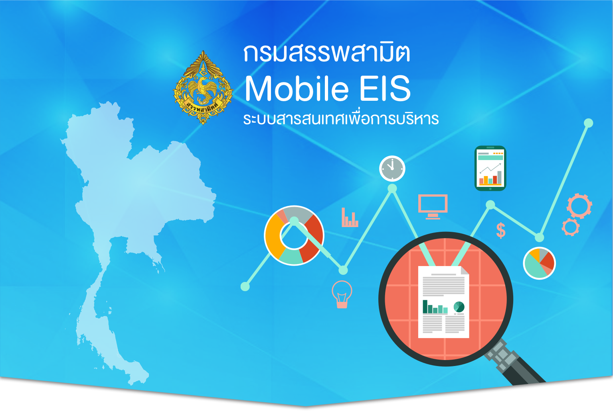
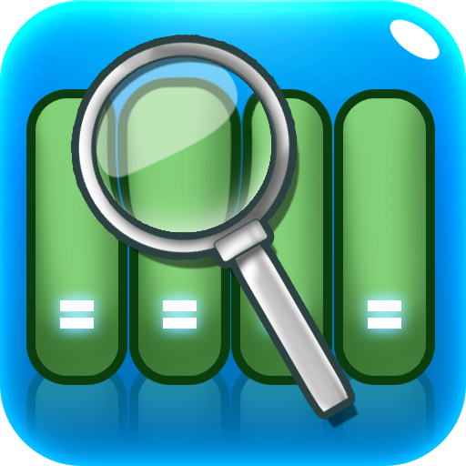

<ion-header>
  <ion-navbar>
    <ion-title>
      EXSICE BI MOBILE APP
    </ion-title>
  </ion-navbar>
</ion-header>

<ion-content>

  <ion-nav #mycontent [root]="rootPage"></ion-nav>

  <ion-menu [content]="mycontent">
    <ion-content>
      <ion-list>
        <ion-item menuClose detail-none>Close Menu</ion-item>
      </ion-list>
    </ion-content>
  </ion-menu>

  <ion-content>
    <ion-card>
      
      <ion-card-content>

        <div class="row ">
          <div class="col"></div>
          <div class="Advice">
             คำแนะนำ
          </div>
        </div>

        <ion-list >
          <ion-item class="login">
            <ion-label floating>ชื่อผู้ใช้</ion-label>
            <ion-input type="text"  [(ngModel)]="userData.username"></ion-input>
          </ion-item>
          <ion-item class="login">
            <ion-label floating>รหัสผ่าน</ion-label>
            <ion-input type="password"  [(ngModel)]="userData.password"></ion-input>
          </ion-item>
          <ion-input [hidden]="true"></ion-input>
        </ion-list>
        <br>
        <button ion-button block (click)="login()">เข้าสู่ระบบ</button>

      </ion-card-content>
      <ion-card-content>
        <div class="row ">
          <div class="col"></div>
          <div class="reportHome">
            
          </div>

          <div class="col"></div>
          <div class="reportHome">
            
          </div>

          <div class="col"></div>
          <div class="reportHome">
            
          </div>

          <div class="col"></div>
          <div class="reportHome">
            
          </div>

          <div class="col"></div>
        </div>
      </ion-card-content>

    </ion-card>
  </ion-content>

  <button ion-button round outline menuClose="left" (click)=GotoFax()>Test1</button>
  <br>

  <!--Test2 ของดาว-->
  <button ion-button round outline menuClose="left" (click)=GotoTest2()>Test2</button>
  <br>

  <button ion-button round outline menuClose="left" (click)=GotoGauge()>GotoGauge</button>
  <br>
  <button ion-button round outline menuClose="left" (click)=GotoChart()>Test4</button>
  <br>

  <button ion-button round outline menuClose="left" (click)=GotoChart()>Test5</button>
  <br>
  <button ion-button round outline menuClose="left" (click)=GotoChart()>Test6</button>
  <br>


</ion-content>
